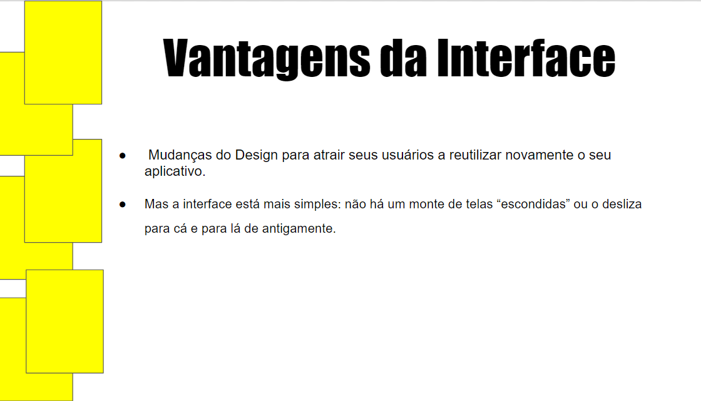
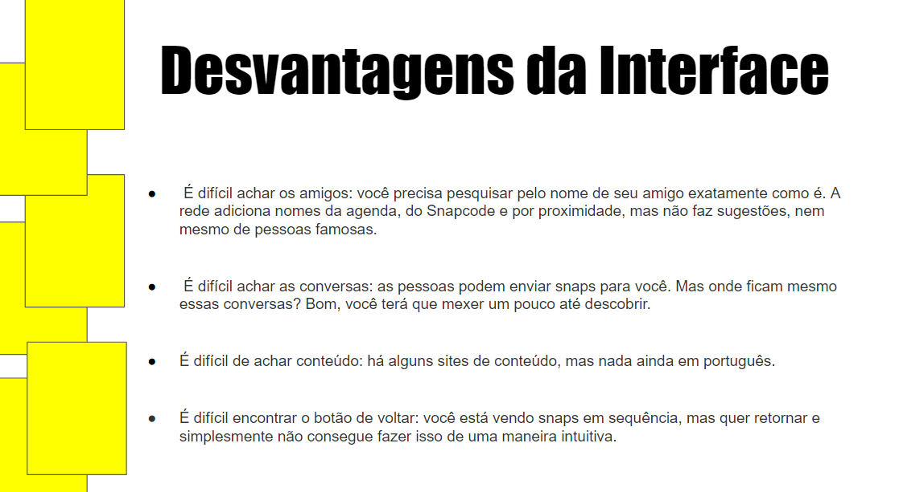
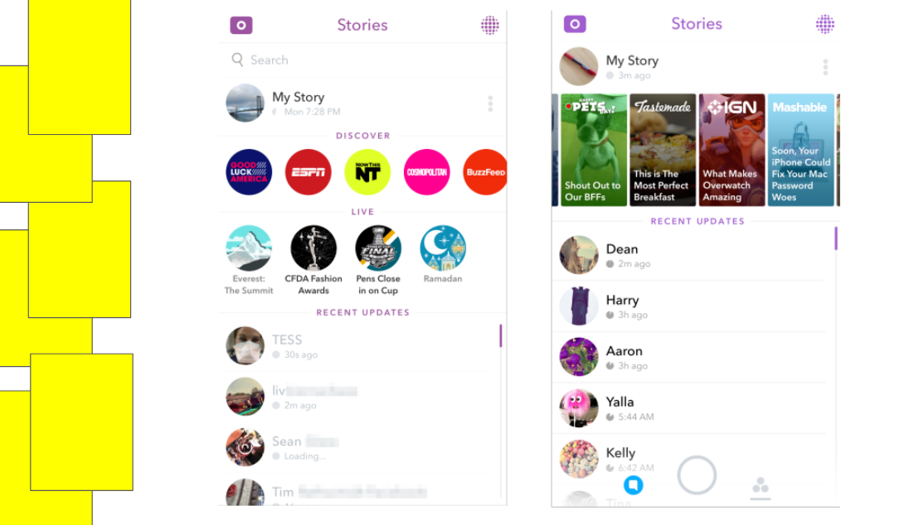

Professor:
Daniel Borges
Unidade Curricular:
Interface e Usabilidade
Conceitos e fundamentos dos processos da interação homem-máquina em mídias digitais diversas. Os elementos de interface e suas aplicações, hierarquia de informações e navegação. Reflexão sobre o uso e adequação das interfaces aos diferentes suportes do ambiente digital, e sua variedade de demandas.
Planejar navegação e desenvolver visão crítica de usabilidade. Desenvolver interface para sistemas interativos
Vantagens e desvantagens da interface de aplicativos : SNAPCHAT
